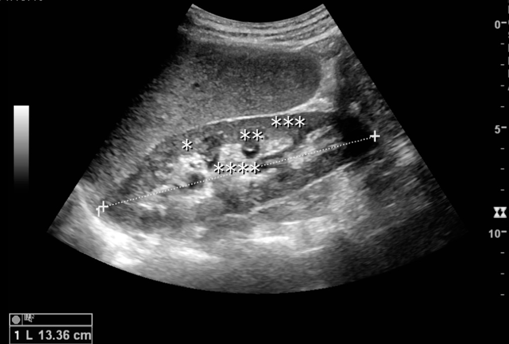

Conceptual image-formation schematic · not to scale
A transducer sends sound into tissue and receives returning echoes. Echo timing helps place interfaces by depth; echo strength contributes to brightness. Gel improves coupling by reducing air between the probe and skin.
A long-axis view follows an object's length; a short-axis view cuts across it. The lab uses an ideal straight vessel: a longitudinal plane shows an elongated lumen, while a perpendicular plane shows a circle. Oblique cuts can produce an ellipse.
FICTIONAL WORKED SCENARIO
A color Doppler image shows two colors. They do not establish arterial versus venous oxygenation. Read the displayed scale and flow direction relative to the probe; the color convention can be reversed.
Gas, bone and depth can limit what is seen. An organ hidden by bowel gas is not proven normal. Technique and settings influence the examination, so distinguish a normal assessed structure from one that was not adequately visualized.
Ultrasound provides real-time imaging without ionizing radiation and can support Doppler assessment and guided procedures. Appropriate acoustic output and examination duration still matter. The atlas is a conceptual introduction, not a scanning competency course.

Normal adult kidney on ultrasound. Original source labels: * column of Bertin, ** pyramid, *** cortex, **** sinus; the dashed line measures renal length.
Kristoffer Lindskov Hansen, Michael Bachmann Nielsen and Caroline Ewertsen · CC BY 4.0 · Unchanged
Independent teaching image; not the patient from the fictional scenario.